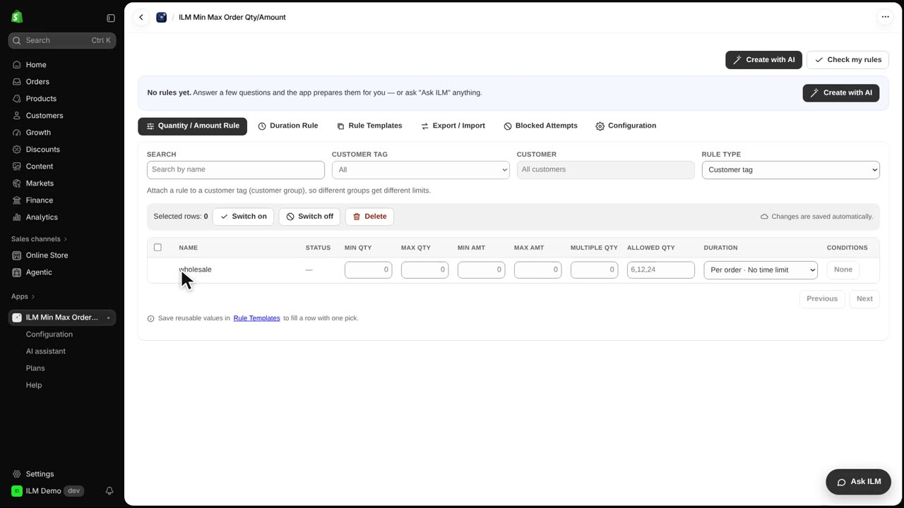
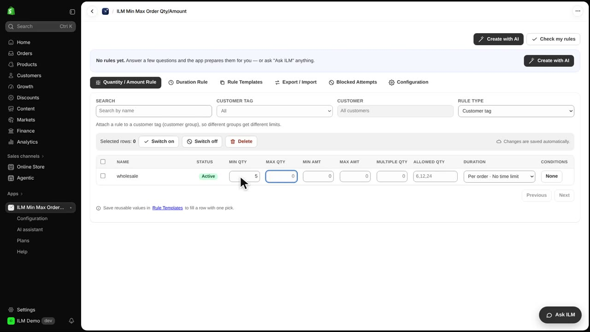
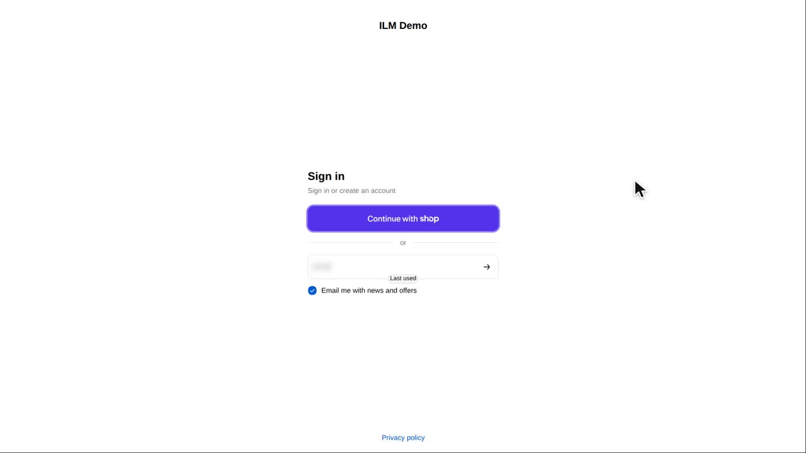
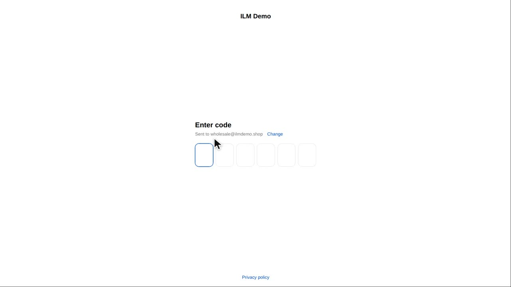
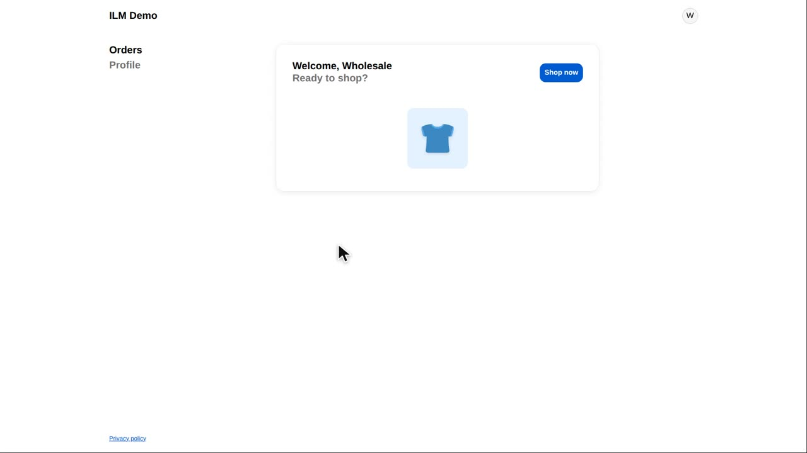
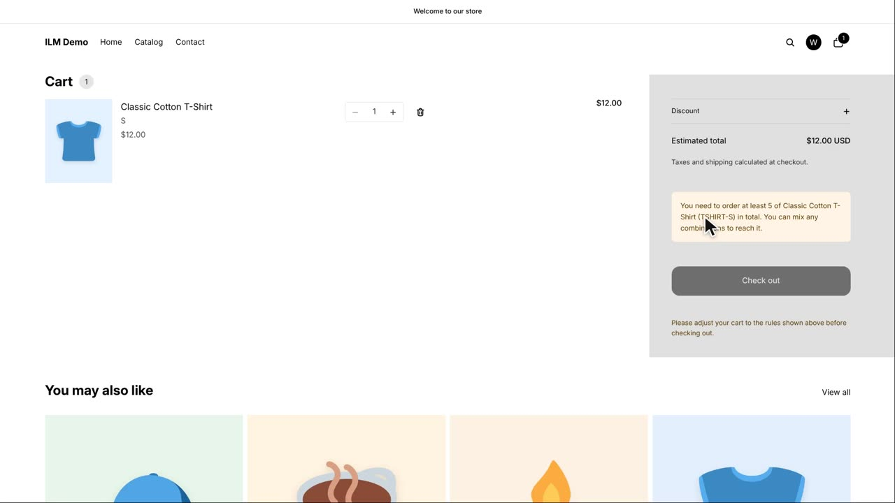

Customer tags in Shopify group your customers, for example wholesale buyers. A customer tag rule only applies to customers who carry that tag, so you can give different order limits to different groups. In this lesson our wholesale customers must order at least five of each product, while regular shoppers stay free to buy just one. You will see the rule set up in the app, then watch a guest and a logged in wholesale customer get different results.
Here we change Rule Type to Customer tag. The app now lists every customer tag in your store as its own row, so you can set limits per tag. This is the place to use when, for example, you sell both to the public and to shops that resell your goods.

In the row for the wholesale tag we type five into Min Qty. That means any customer tagged wholesale must have at least five units of a product in the cart before checkout.

Now we test as a shopper who is not logged in. This visitor has one Classic Cotton T-Shirt in the cart and is not affected by the tag rule, so checkout is allowed. Guests and customers without the tag keep the normal limits.

Next a wholesale customer signs in to the shop with their e-mail address. Because this account carries the wholesale tag, the rule we just saved will apply to them. The customer enters the address and continues.

Shopify sends a one time code to that e-mail. The customer types the six digits and presses Enter to finish logging in. Once signed in, the store knows which tags belong to this customer.

Back in the cart with the same single Classic Cotton T-Shirt, the shopper now sees a notice asking for at least five. The tag rule is working: the same cart that was fine for a guest is blocked for a wholesale buyer. The shopper must add more units or remove the item.
